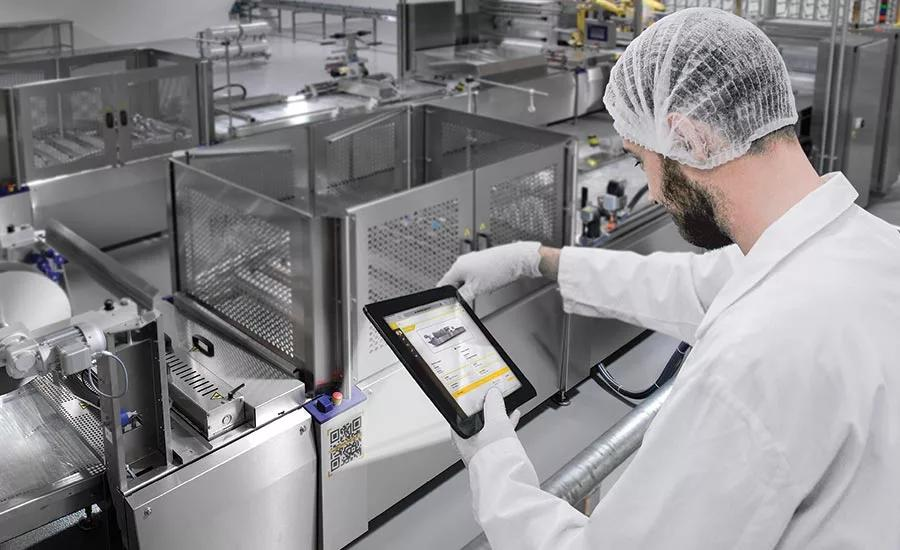
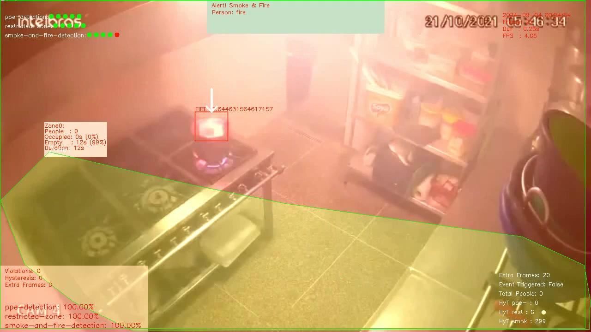
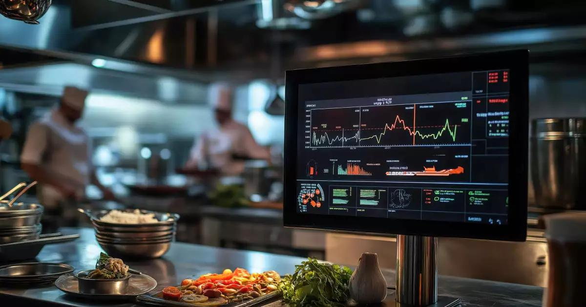
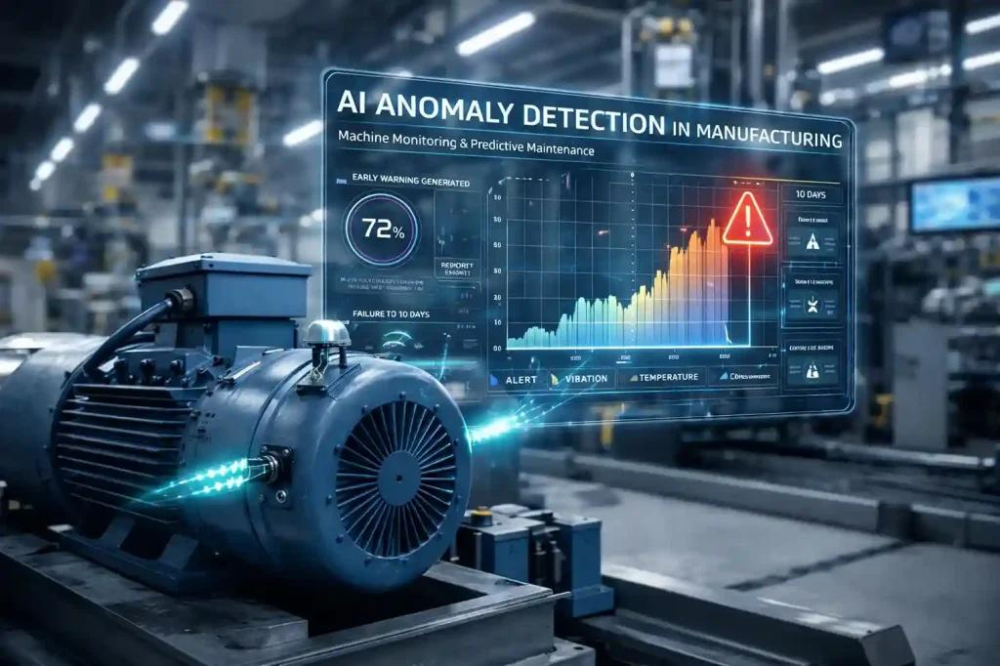
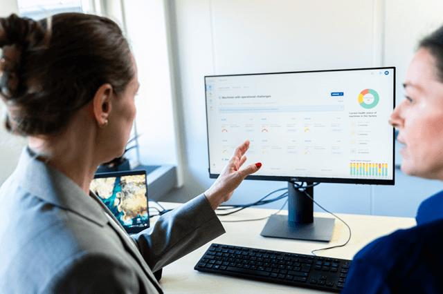
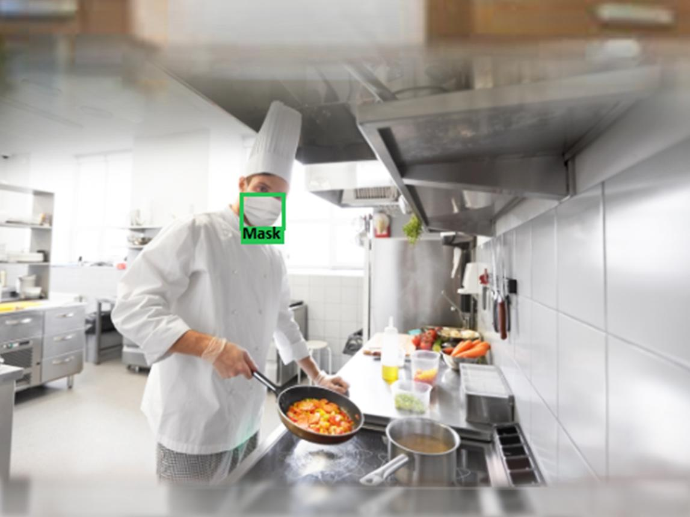

KitchenSense AI is an AI-powered predictive maintenance and equipment intelligence platform tailored for the UK's high-pressure hospitality and food-service sectors. We eliminate the "Downtime Gap" turning reactive firefighting into optimised uptime, protecting margins, ensuring fire safety, and guaranteeing operational continuity.
The UK's 176,685 hospitality businesses face a systemic "Downtime Gap" where critical asset management is still dominated by reactive, "run-to-fail" maintenance strategies and manual inspections. Every fryer breakdown, compressor failure, or extraction fan fault costs thousands in lost revenue, emergency repairs, and fire safety risk. KitchenSense AI is the predictive intelligence layer that eliminates this gap entirely.
KitchenSense AI combines real-time monitoring, failure fingerprinting, predictive diagnostics, fire safety intelligence, energy optimisation, and federated benchmarking into one unified SaaS platform retrofit-friendly, no-code, and built specifically for UK hospitality SMEs.

Continuously monitor the health and performance of all kitchen assets through IoT sensor nodes capturing vibration, thermal drift, and electrical signals in real-time.
Our proprietary machine learning models identify the unique "Failure Fingerprint" of each asset detecting degradation signals weeks before catastrophic failure occurs.
Automatically converts complex mechanical signals into clear, multi-step maintenance workflows no manual engineering review required from kitchen staff.

Proactively detect electrical faults and fat-accumulation-driven overheating 2–6 weeks before ignition reducing the 19% fire risk associated with UK food premises.

Comprehensive Reliability Dashboards linking predictive interventions to direct financial margin protection, energy consumption, and operational continuity metrics.
Anonymised sector-wide benchmarking allows independent restaurants to leverage collective intelligence what works in Manchester improves reliability in Birmingham.
Our models predict catastrophic failure risk weeks in advance not just after a crisis has begun. Move from emergency repairs to planned, logic-driven interventions.
Works above any existing hardware fryers, ovens, fridges, extraction systems. No equipment lock-in. Plug-and-play sensor nodes deploy in hours, not weeks.
Capture expert mechanical knowledge as permanent organisational "Reliability Equity" so asset intelligence stays even after senior staff depart.
Tiered SaaS pricing from £50/month gives independent takeaways the same predictive intelligence previously reserved for global fast-food giants.
Models trained on UK Home Office fire statistics, HSE electrical fault patterns, and British appliance profiles hyper-localised for British regulatory standards.
Reduce mechanical energy waste by 20–30% per institution through precision maintenance routing, extending asset life by up to 40% toward UK Net Zero 2050 goals.
KitchenSense AI (trading as the Kitchen Equipment Failure Prediction Platform) is an AI-driven, predictive maintenance and equipment intelligence infrastructure platform tailored specifically toward the UK's high-pressure hospitality and food-service sectors. Our mission is to enable UK hospitality operators to move from "reactive firefighting" to "optimised uptime" eliminating the Downtime Gap and protecting institutional reliability memory.
To enable UK hospitality operators to move from reactive firefighting to optimised uptime by leveraging a predictive mechanical compiler that eliminates the downtime gap and protects institutional reliability memory.
We aspire to be the global standard for "Reliability-Ops," fostering a future in which commercial kitchen assets are automatically synchronised with operational service needs, ensuring continuous kitchen readiness and zero-gap margin protection.
Continuous refinement of Installation-to-Intervention models to stay ahead of mechanical wear cycles of high-intensity kitchen environments and global safety trends.
A commitment to mechanical-telemetry integrity and the elimination of "equipment intuition loss" in kitchen asset mapping 92% pre-failure detection accuracy.
Empowering hospitality operators to own their operational reliability logic as a proprietary and permanent business asset never locked into external contractors.
Making complex equipment lifecycles manageable through machine-executable maintenance pathways and low-friction retrofit sensor integrations.
Equipping head chefs and facilities directors with automated foresight needed to scale kitchen footprints without headcount-proportional maintenance costs.
Generating CFO-ready reports showing how Reliability Logic reduces carbon footprints and Margin-at-Risk, aligned with UK Net Zero 2050 targets and FSA compliance.
Dilipvan possesses a high-intensity blend of advanced data analytics, machine learning, and operational strategy experience creating a unique "founder–problem–market fit" to lead the Kitchen Equipment Failure Prediction Platform in the UK. His background bridges the gap between raw mechanical telemetry and actionable business intelligence, providing first-hand expertise in solving the Operational Downtime Gap that currently results in multi-billion pound revenue losses across the UK's hospitality sector.
As a Data Analyst proficient in Python, SQL, and Power BI, Dilipvan has a proven track record of converting complex datasets into high-performance diagnostic tools. With certifications in Machine Learning and Data Analysis from IBM and Coursera, he is uniquely qualified to architect the Reliability Delta Diagnostics (RDD) engine.
The primary reason Dilipvan is exceptionally qualified is his ability to unify the worlds of Predictive Data Science and Operational Kitchen Logic. While traditional maintenance firms rely on manual logs and reactive repairs, Dilipvan treats equipment health as a data-governance problem linking mechanical metrics like motor frequency directly to commercial outcomes like peak-time service continuity.
A unified, machine-executable intelligence layer that converts fragmented asset telemetry into actionable maintenance logic. Unlike legacy maintenance contracts or manual "snapshot" checks, KitchenSense AI establishes a continuous asset-monitoring lifecycle transforming maintenance from an unpredictable, margin-eroding variable into a precise, automated driver of business continuity and safety.
A first-of-its-kind framework bridging raw machine telemetry (vibration, heat, current) and real-time maintenance outcomes creating a continuous feedback loop that improves failure-prediction accuracy with every equipment cycle.
Uses machine learning to identify subtle spectral patterns micro-vibrations in extraction fans or electrical noise in fryer thermostats that precede catastrophic failure, benchmarking "Healthy State" signatures across diverse equipment sites.
Automatically diagnoses root causes of premature wear grease accumulation in ventilation or limescale in combi-ovens by analysing the delta between an asset's expected operational lifespan and its actual quality-loss velocity.
Virtually tests the impact of operational changes increasing fryer temperatures for peak demand or adjusting defrost cycles against historical telemetry to predict failure risks and find optimal energy-saving paths before real-world implementation.
Equipment failure events are transformed into "Failure Intelligence" proprietary algorithms map unsuccessful outcomes back to the original telemetry profile recorded weeks prior, continuously improving prediction accuracy.
Anonymised sector-wide benchmarks allow independent takeaways and cafes to compare their Equipment Health DNA and energy efficiency against regional and national peers without sharing private commercial data.
No other solution unifies predictive forecasting, mechanical logic cloning, and outcome-linked memory into one modular SaaS platform tailored to the UK SME hospitality segment.
| Feature / Capability | Enterprise Compliance (Checkit/SmartSense) |
Mobile CMMS (MaintainX/FaultFixers) |
Binary Sensors (Generic IoT) |
Manual Logs (Paper/Excel) |
KitchenSense AI |
|---|---|---|---|---|---|
| Installation-to-Intervention Lifecycle | Reporting only | Task management | Alert only | No | ✓ Automated signal-to-action |
| Failure Fingerprinting & Anomaly Synthesis | No | No | Threshold based | No | ✓ Proprietary spectral ML |
| UK Fire Safety Benchmarks | Limited (Global) | No | No | Safety checks only | ✓ Trained on HSE/Home Office |
| Asset Health DNA & Signal Mapping | Tags only | Checklists only | No | No | ✓ Mechanical intent to RUL |
| Outcome-Learning Reliability Memory | No | No | No | No | ✓ Failure-to-repair matching |
| Operational Equity Analytics | No | No | No | No | ✓ Downtime-to-margin tracking |
| Federated Reliability Network | No | No | No | No | ✓ Anonymised benchmarking |
| Target Segment | Global Enterprise | General Facilities | Individual Stores | Independent SMEs | UK SME Hospitality & Dark Kitchens |
| Cost Structure | High per-asset fee | Subscription | Tool-based | Time-intensive | SME-optimised SaaS + Margin Protection |
The global market for AI-driven predictive maintenance and kitchen equipment intelligence was estimated at USD 12.94 billion in 2024, projected to grow to USD 16.42 billion in 2025 exhibiting a CAGR of 26.9% through 2033. The UK hospitality technology market was valued at approximately USD 60.1 billion in 2025, with the UK emerging as a leading global hub for hospitality automation and safety-linked AI investment.
Serviceable addressable market across key UK hospitality segments (£ Millions)
% of UK hospitality directors citing critical operational pain points
Capability radar across key predictive maintenance features
Market size in USD Billions & UK adoption rate 2022–2030
Of UK hospitality directors highly interested in predictive asset intelligence that links equipment behaviour to failure deltas
Of operations directors admit that reactive maintenance is an unsustainable bottleneck given the 3–5× cost premium of emergency call-outs
Willing to pay £150–£400/month per site for multi-asset predictive maintenance confirming strong product-market fit
Over 45% of UK high-turnover food outlets. London alone represents 25%+ of all UK hospitality revenue. Operational Uptime value is 35% higher than the national average the ideal launch territory.
Among the fastest-growing dark kitchen and takeaway hubs in the UK. Agile operators relying heavily on automated systems to scale but lacking enterprise-grade engineering teams.
High-density food-service markets with OSHA/NFPA compliance requirements. The platform's framework-agnostic architecture maps to global electrical standards and regional safety regulations.
Estimated for firms using predictive Installation-to-Intervention logic in 2026
Expected in 2026 for food premises driving demand for automated fire-risk detection
From energy price spikes and rising labour costs driving need for asset uptime extension
AI-driven predictive maintenance market one of the fastest growing tech sectors worldwide
A four-phase R&D-validated process that transforms unpredictable mechanical burdens into permanent, institutional Operational Equity.
Deploy secure "Reliability Logic Nodes" low-cost IoT accelerometers, thermal probes, and current clamps retrofitted above any existing kitchen hardware without equipment lock-in. The proprietary Kitchen Asset Ontology (KAO) converts raw machine telemetry into structured "Reliability Objects," preserving specific mechanical nuances of each asset category.

The Custom Anomaly Detection Classifier and Vibration Spectrum Forensics Engine analyse high-velocity sensor data in real-time detecting "Pre-Failure Signatures" such as motor bearing wear or heating element degradation with 92% accuracy. The system identifies the specific "Failure Fingerprint" of each asset's lifecycle long before physical symptoms appear.
Complex sensor signals are automatically deconstructed into structured "Asset Health Reports" and multi-step maintenance workflows no manual engineering review required. Reliability Delta Diagnostics (RDD) identifies mechanical drift in real-time, while Risk-Weighted Maintenance Evolution automatically prioritises interventions for high-dependency assets based on degradation trends.


The Closed-Loop Asset Stewardship Model generates comprehensive Reliability Dashboards linking specific predictive interventions to direct financial margin protection and reduced energy consumption. Outcome-Learning Reliability Memory continuously adapts every repair "teaches" the system to refine future prediction accuracy, building permanent institutional Operational Equity.
Tiered pricing designed to provide accessibility for independent takeaways while scaling to full predictive intelligence for large hospitality groups starting at just £50/month.
Initial hardware and sensor configuration for Reliability Logic Nodes, including KAO schema mapping and baseline health fingerprinting for all monitored assets.
Specialised multi-asset baseline validation and Kitchen Reliability Logic Orchestration Setup performed by our certified Reliability-Ops engineers for complex kitchen environments.
Advanced sector benchmarking and Operational Equity growth insights via the FRLN essential for multi-site institutions requiring strategic asset scaling and margin protection reporting.
Join our current cohort of London and Manchester dark kitchens and fast-food franchises for a fully supported 12-week pilot deployment with direct access to Dilipvan Gauswami's team.
Fill in your details and our team will contact you within 24 hours to schedule a live demonstration of the KitchenSense AI platform.
Predict. Prevent. Perform. Profit. Bridging the Downtime Gap through Kitchen Intelligence for the UK's hospitality businesses.